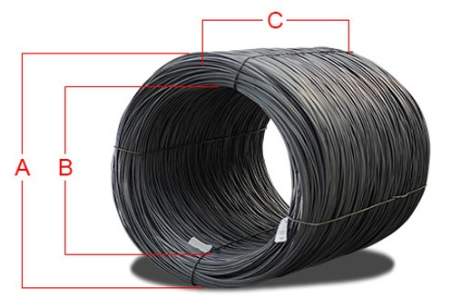
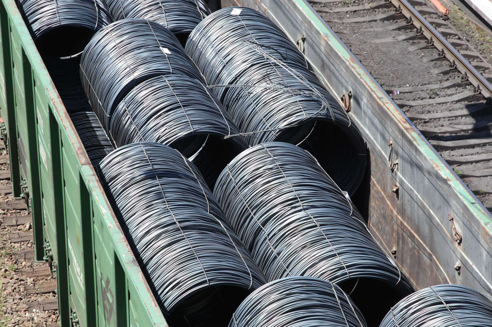
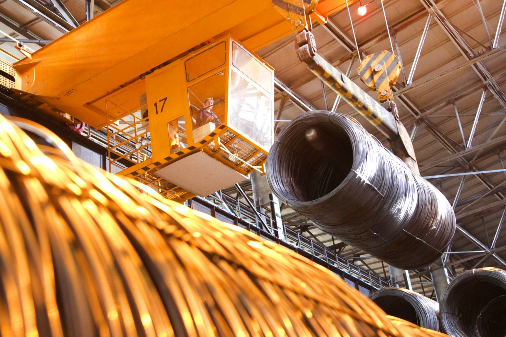

Контакти менеджерів з продажу
Завантажити каталог продукції
Види катанки
Підприємство виробляє катанку сталеву за міждержавними та національними стандартами:
| Вид катанки | Стандарт | Детальна інформація |
|---|---|---|
| Катанка з вуглецевої сталі для перетягування в дріт / Катанка круглого перетину з вуглецевої сталі |
ASTM А 510М / СОУ МПП 77.140-236:2008 | Дізнатися більше |
| Катанка стальна канатна | ДСТУ 3683-98, ASTM А 510М, ISO 16120 | Дізнатися більше |
| Катанка з вуглецевої сталі звичайної якості | ДСТУ 2770 94 (ГОСТ 30136 95) | Дізнатися більше |
| Катанка з низьковуглецевої та легованої сталі для виготовлення зварного дроту | ТУ 14-15-345-94, ТУ 14-15-346-94, ТУ У 27.1-4-548-2003, ТУ У 27.1-24432974-020:2010 |
Дізнатися більше |
| Катанка з низьковуглецевої та легованої сталі для виготовлення зварного дроту | EN ISO 14341:2011 | Дізнатися більше |
Технічні характеристики мотків катанки

| Діаметр катанки, мм | Маса мотку, кг | Зовнішній діаметр мотку, мм (A) | Внутрішній діаметр мотку, мм (B) | Висота мотку, мм (C) |
|---|---|---|---|---|
| 5,5 - 16,0 | 1100 - 2100 | н.б. 1750 | н.б. 1250 | н.м. 750 |
Пакування
Пакування виконується катанкою діаметром 5,5 - 8,0 мм в 4 або 8 радіальних ув’язок.
Маркування
На кожний моток прикріпляються два ярлика, які включають в себе наступну інформацію:
- товарний знак виробника;
- марку сталі;
- номер плавки та партії;
- розмір (діаметр катанки)
- масу мотку, кг;
- країна отримувач продукції.


